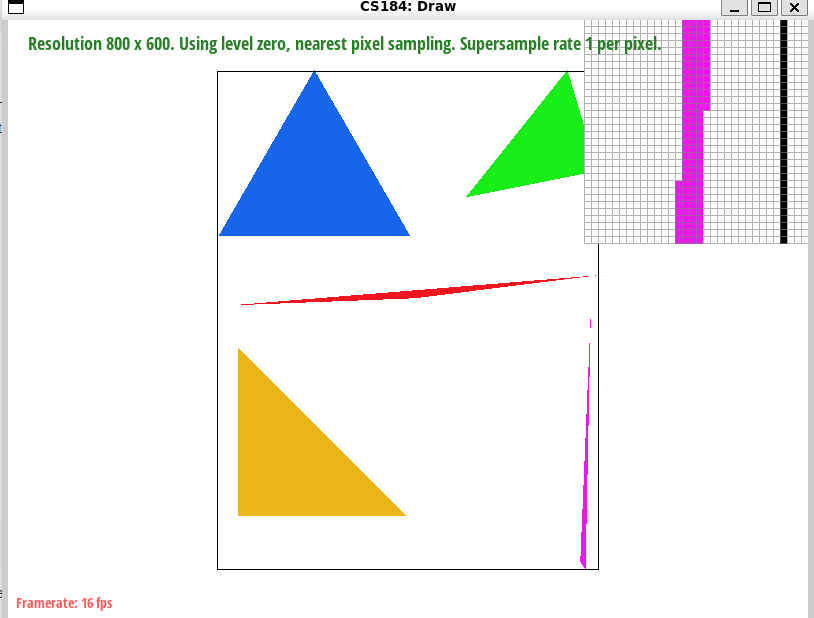
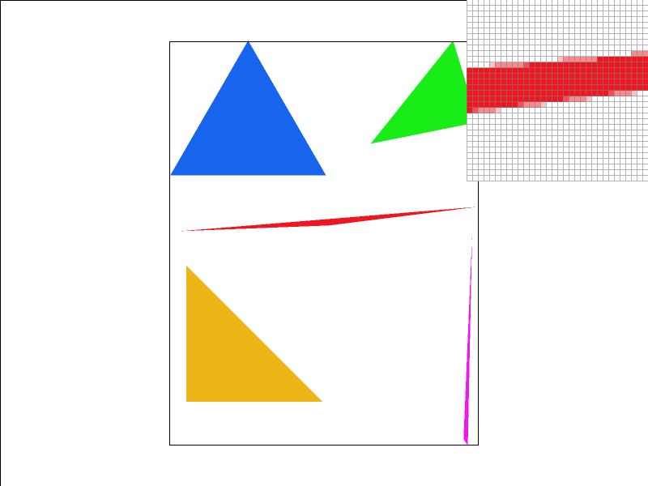
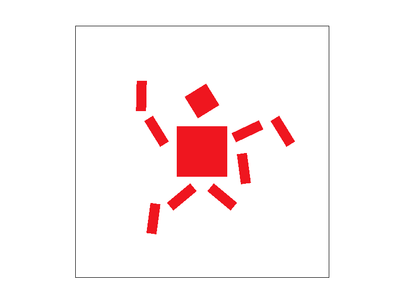
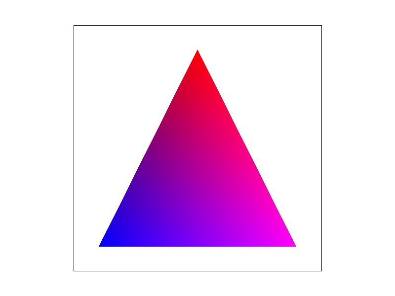
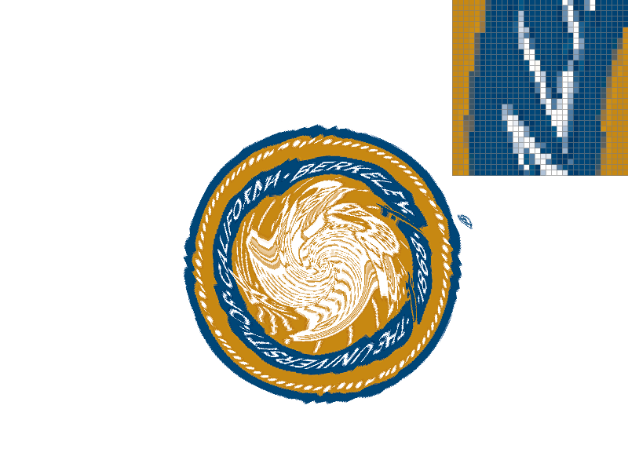
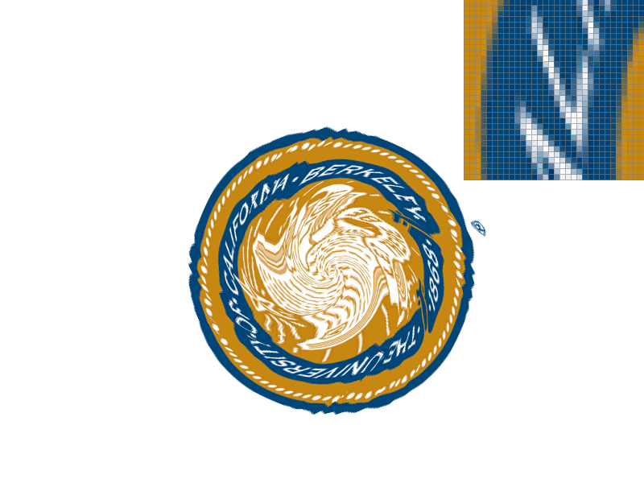
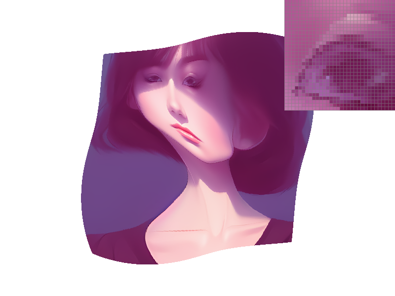
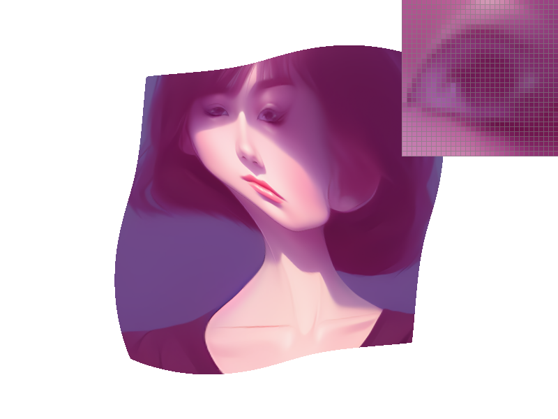

Overview
This homework tasked us with implementing the basic necessities for a comprehensive rasterizer. The tasks walk us through foundational computer graphic processes such as rendering SVG files with single-color and textured triangles, converting vector graphics into on-screen pixels, antialiasing through supersampling and applying transformations to the image. As a whole, these tasks allowed us to create a basic implementation of a rasterizer. Some interesting things we learned from completing the homework were how computationally expensive increasing the sample rate can be for supersampling, how to use barycentric coordinates to shade a triangle, how to use transformation matrices with vector graphics to manipulate images, and finally getting to dive deeper into pixel and level sampling. As for logistics of the assignment, we found it captivating to think about and try to wrap our minds around the geometric challenges. We both had little experience prior to this assignment, but, it was nonetheless fascinating to see the end product as well as enjoyable to spend the time working.
Section I: Rasterization
Part 1: Rasterizing single-color triangles
How to rasterize triangles?
Rasterization is the process of taking a geometric shape, usually broken down into multiple triangles, and converting it into a raster image, a grid of pixels. This is done by determining the bounds of the geometric shapes through a series of translations and projections, and filling in the appropriate pixels that fall within these bounds with the desired color. Rasterization is often followed by anti-aliasing,which seeks to shade the edges of the triangle. This shading is necessary to get rid of the "staircase effect" on our triangles, where the pixels cause a sharp, uneven edge on the triangle that makes the whole triangle seem "rough" to the eye. By shading with lighter colored pixels around the edges, we are able to create a "softening" effect on the staircase shape caused by the pixels. This makes the triangle seem more smooth overall.
In our implementation, we first attempted to solve this problem through brute force by checking the entire grid. We checked every single pixel, and then determined whether this pixel lied within the triangle by applying edge equations. These edge equations are formed using the edge function that tests which side of the half-plane (created by the edges) a pixel lies in. We create an equation for each side of the triangle, called L0, L1, and L2 respectively. If all of these equations evaluate to >= 0, or if all of these equations evaluate to <= 0, then we know that the selected pixel lies within the triangle, and we can color it appropriately. Applying these equations to all pixels on the grid allowed us to successfully color in the triangles.
We then made our implementation more efficient by limiting our checked area to the bounding box of the triangle. This was done by finding the minimum and maximum x value and y value between all vertices of the triangle respectively. If you imagine a box surrounding the triangle, the min x and min y value together would correspond to the top left corner of the box, while the max x and max y value together would correspond to the bottom right corner of the box. By limiting the area we check to these bounds, our implementation checks only within the bounding box of each triangle.
|

|
Part 2: Antialiasing triangles
Super Sampling
Supersampling is one method of implementing the antialiasing process as described before. We need to antialias our images because the rasterization leaves rough, "staircase" edges that are unpleasant to look at. Antialiasing reduces this jaggedness by softening the edges.
Supersampling seeks to implement antialiasing by simulating a resizing of the grid. The problem we are facing is that the pixels are relatively large, so we can easily distinguish between different pixels with the naked eye alone, allowing us to see the roughness of the image. If the image was a higher resolution, then we would not notice this difference as much. Because we cannot simply add resolution to any device, we simulate this by increasing the effective resolution, and then averaging the samples down. This is similar to passing the image through a box filter, which mirrors a low-pass filter used to filter out high frequencies. This is useful because we are able to effectively "increase" resolution without needing to change the hardware of the device, and the result is smoother looking edges for the geometric images previously rasterized.
We implemented this by subdividing each pixel according to the sampling rate. This is how we "increase" the resolution, by treating each pixel as a collection of smaller pixels, defined by the given sampling rate. For each sub-pixel, we run the same process as before, testing whether this pixel lies within the geometric image bounds. If so, then we fill in the sub-pixel with the desired color. After all pixels are accounted for, we "downsample" by averaging the colors of the sub-pixels within each pixel. This average color becomes the new color of the pixel. For example, a pixel with 4-subpixels, having 2 sub-pixels within the triangle bound being colored red, and 2 sub-pixels outside the triangle bound being colored white, would have a final average color of a much lighter red color. To fully implement this, we had to dynamically change the size of the sampling buffer according to the sample rate, and then average out the sub-pixel colors per each pixel in the resolve_to_framebuffer() function. Our final image then has faintly colored pixels around the edges of the geometric shape, which gives the overall shape a smoother feeling and fixes some of the jaggedness seen earlier.
|
|

|
|
|
Conclusion from Screenshots
Increasing the sampling rate allows us to have a higher "resolution" image, giving a seemingly clearer and more detailed image. However, increasing the sampling rate also comes with an increase in computational costs, as we are subdividing each pixel more and more. There's eventually a tradeoff between image quality and the computational costs (memory, processing) that come with increased sampling rate.
Part 3: Transforms
|

|
Section II: Sampling
Part 4: Barycentric coordinates
Barycentric Coordinates
Barycentric Coordinates are a coordinate system used to express a point that lies within a shape, usually a triangle, as the average of the triangle's vertices individually weighed by alpha, beta, and gamma. The respective coordinates/weights are a representation of the distance and direction the expressed point is to the corresponding vertex. For example, in the image below, the position of any point within the triangle can be described via a combination of red, green, and blue; the intensity of each color at the points is directly proportional to the corresponding weights (barycentric coordinates) of the vertices.

|

|
Part 5: "Pixel sampling" for texture mapping
Pixel Sampling
Pixel sampling is the process of determining the color value of a pixel based on data from a source image or texture, and is usually used in processes such as mapping a 2D image onto a 3D model. To determine how to display the desired texture on the screen at this new spatial resolution, pixel sampling is used. There are various pixel sampling methods, of which two of the most common are the "nearest neighbor" and "bilinear" methods. Implementation: for nearest neighbor, we just round after scaling uv. For billinear, we interpolated after scaling uv.
Nearest Neighbor Sampling
Nearest Neighbor sampling is a simple algorithm that works by selecting the color of the closest texel in the texture and rounding. No averaging or blending of texels is performed, which makes nearest sampling fast and easy to implement. However, the lack of additional computation means nearest sampling often leads to a pixelated or blocky appearance, due to the lack of any transitions between the texels.
Bilinear sampling
Bilinear sampling is a more complex algorithm that is able to smoothen the transition between texels. Bilinear sampling works by taking the four nearest texels around the desired location in the texture and performing a weighted average of these texels. This weighted average takes the distance to the desired location into account, and blends the texels into the final color. We first interpolate horizontally, and then vertically, which is why this is called "Bilinear" sampling. This extra computation means that Bilinear sampling is more complex and computationally expensive than nearest-neighbor sampling, but generally offers a greater visual quality.
|

|
|
|
|

|
Analysis
The images above demonstrate the distinct differences between nearest and bilinear sampling (including differences in sampling rate). With no supersampling, we can see that bilinear sampling creates a sharper 'L' shape than nearest. In nearest sampling, we don't take into account the colors of surrounding texels, only the closest one. Therefore, when we zoom in, the textures become more bulky and the pixelation is more apparent. However, when we factor in supersampling, the differences between the two sampling methods aren't as distinct because with a higher sampling rate, the details become downsampled and the pixelation isn't as visible. The differences between the two sampling methods are really only apparent when we magnify the textures or it's displayed on a larger scale. Essentially, there'll be a noticeable difference if there's a large amount of inconsistency or discontinuity because nearest will not be as effective as bilinear, which tends to bridge the gap of the continuity through blending/averaging the surrounding texels.
Part 6: "Level sampling" with mipmaps for texture mapping
Level Sampling
Level sampling is the process of selecting different levels of detail for a texture based on the various spatial differences relative to the viewer. Level sampling is usually used with mipmaps, which are various pre-made resolutions for a single texture. Different levels of detail are given for different textures that are farther in distance, at an angle, etc. from the camera. This allows textures to look desirable and be efficiently rendered at these various distances and angles. Level sampling is useful because it allows us to efficiently generate and render various textures that look attractive at various distances and angles, saving computational power (compared to supersampling which can be expensive) while delivering satisfying results. For implementation, we have a sample function for tex which is essentially a wrapper that handles the cross product between P and L (pixel and level sampling possibilties). For each level, we calculate get_level, which is implemented from lecture (taking the norm) and log base two(the result). We had to consider edge cases for the levels to ensure our level sampling works correctly.
Tradeoffs
For pixel sampling, we have nearest and billinear sampling. Bilinear sampling accesses four txels for each sample point and then performing linear interpolations on them which can be computationally intensive, not as expensive as nearest neighbor ssampling which doesn't require interpolation. For both, memory usage is not really a concern. Billinear sampling does however provide more of a blended/smooth transition between texels whereas nearest neighbor is typically more bulky since it doesn't have blending. For level sampling, zero level is the simplest to implement, but may not be the greatest for antialiasing; for memory usage, may not be the most efficient as we don't really lower the res where having higher res is not necessary. For nearest level, it chooses a more appropriate mipmap level and can be more efficient than zero level, but it still has some aliasing concerns and there's noticeable jaggies still. For billinear level sampling, we provide a smoother transition between mipmap levels and reduce aliasing as well as moire patterns more effectively, however, the obvious downside is more interpolations and thus more computations. Sometimes, billinear can be extremely blurry if used unnecessarily. Adjusting the number of samples per pixels will lead to slower rendering times since computational cost is increased and more memory usage, but can also drastically antialias images since we have a higher rate of samples (super sampling).
|

|
|
|

|
|